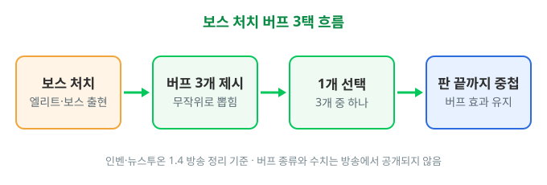
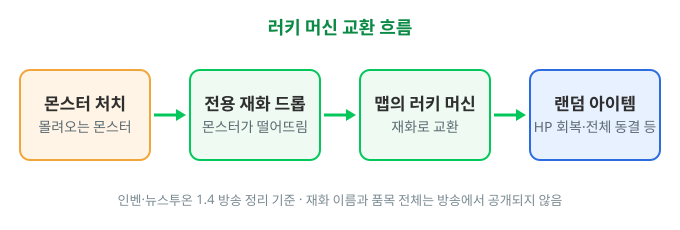

이환 숯덩이의 보물 공략 사전 정리, 보스 처치 버프 3택과 러키 머신 교환 규칙
※ 다른 공략은 댓글을 참고해 주세요.
안녕하세요. 영원한도시입니다. 이환 1.4 버전의 신규 PvE '숯덩이의 보물'이 이번 주 목요일, 10월 8일 오전 11시에 열리는데요. 개막을 이틀 앞두고 공개된 규칙만 먼저 추려 봤습니다. 공개 전이라 아는 척하지 않고 비워 둔 부분은 개막 후에 채울게요.
1. 숯덩이의 보물이란, 방어전과 운영 기간
방송 정리 기준으로 '숯덩이의 보물'은 몰려오는 몬스터를 막아 숯덩이의 수집품을 지키는 방어전 방식의 PvE 콘텐츠입니다.
판이 진행되는 동안 일반 몬스터뿐 아니라 엘리트 몬스터와 보스까지 나타나는데요, 잡아서 쓸어 담는 사냥이 아니라 '지키는 쪽'에서 출발하는 콘텐츠라는 점이 첫 번째 특징입니다.
| 구분 | 내용 |
|---|---|
| 콘텐츠 유형 | 방어전 PvE (몬스터를 막아 수집품 지키기) |
| 등장 몬스터 | 일반 몬스터 · 엘리트 몬스터 · 보스 |
| 운영 기간 | 10월 8일(목) 11:00 ~ 11월 11일(수) 06:59 |
| 버전 위치 | 1.4 버전(9월 30일~11월 11일) 안에서 진행, 전반 레이븐 · 후반 아카네 린(10월 21일~) |
운영 기간은 인벤 이벤트 기간 표 기준이에요. 1.4 버전이 시작된 9월 30일보다 8일 늦게 열려서 오늘(10월 6일) 기준으로는 아직 입장할 수 없습니다.
1.4 버전은 21일씩 두 페이즈로 나뉘는데요, 전반은 레이븐 중심이고 후반은 10월 21일부터 아카네 린 중심입니다. 숯덩이의 보물은 전반 도중에 열려서 후반 페이즈까지 이어지는 일정이에요.
2. 보스 처치 버프 3택 규칙
방송 정리 기준으로 보스를 처치하면 무작위로 제시되는 버프 3개 중 1개를 골라 받고, 그 버프는 그 판이 끝날 때까지 중첩됩니다.
순서는 '보스 처치 → 무작위 버프 3개 제시 → 1개 선택 → 판 끝까지 중첩'이에요. 아래 도식을 왼쪽부터 보시면 한눈에 들어옵니다.

보스 처치 후 버프 3택 흐름 (방송 정리 기준으로 직접 그린 도식)
출처: 인벤 1.4 방송 정리 · 뉴스투온 이환 1.4 기사 내용을 바탕으로 직접 제작
다만 버프가 몇 종류인지, 어떤 효과인지, 같은 버프를 겹쳐 받는 건지 서로 다른 버프가 쌓이는 건지는 방송 정리에 나오지 않았어요. 이 부분은 개막 후에 화면을 직접 보고 채우겠습니다.
3. 러키 머신 교환 구조
방송 정리 기준으로 몬스터가 떨어뜨리는 전용 재화를 맵에 있는 러키 머신에서 HP 회복이나 전체 동결 같은 랜덤 아이템으로 교환할 수 있습니다.
흐름은 '몬스터 처치 → 전용 재화 드롭 → 러키 머신에서 교환' 순서죠? 보스를 잡아야 받는 버프와 달리 이쪽은 몬스터를 잡으면 재화가 떨어지는 구조입니다. 얻는 계기가 보스 처치와 몬스터 드롭으로 갈리니 아래 표에 나란히 놓았어요.

러키 머신 교환 흐름 (방송 정리 기준으로 직접 그린 도식)
출처: 인벤 1.4 방송 정리 · 뉴스투온 이환 1.4 기사 내용을 바탕으로 직접 제작
| 구분 | 보스 처치 버프 | 러키 머신 교환 |
|---|---|---|
| 얻는 계기 | 보스 처치 | 몬스터가 떨어뜨리는 전용 재화 |
| 받는 방식 | 무작위 3개 중 1개 선택 | 랜덤 아이템으로 교환 |
| 방송에서 나온 예시 | 없음 | HP 회복, 전체 동결 |
| 이어지는 시간 | 그 판이 끝날 때까지 중첩 | 방송 정리에 언급 없음 |
방송에서 예로 든 아이템은 HP 회복과 전체 동결 두 가지뿐이라, 전용 재화의 이름, 교환 품목 전체, 필요한 수량과 확률은 개막 후에 교환 화면을 보고 채울게요.
4. 개막 전에 준비해 둘 것
개막 전에 챙길 건 많지 않은데요, 공개된 규칙에서 나오는 것만 세 가지 적어 둘게요.
- 일정 확인 : 10월 8일 11:00 개막, 11월 11일 06:59 종료입니다. 개막 시각(목요일 오전 11시)과 종료 시각(수요일 오전 6시 59분)을 알림이나 캘린더에 미리 적어 두세요.
- 버프 선택 시점 : 버프 3택은 보스를 처치했을 때 나오는 선택이에요. 고른 버프가 판이 끝날 때까지 이어지니 선택지가 뜨면 화면을 끝까지 읽고 고르세요.
- 재화 쓰임 : 러키 머신은 몬스터가 떨어뜨리는 전용 재화가 있어야 교환할 수 있는 구조거든요. 재화를 바로 쓸지 모아 둘지는 교환 가격을 본 뒤에 정하세요.
5. 개막 후 확인할 것
개막 후에는 입장 조건과 내 캐릭터 사용 여부, 버프 3택의 종류, 러키 머신의 교환 품목, 보상을 먼저 확인합니다. 표에서 비워 둔 칸도 이때 같이 채울게요.
- ☐ 입장 화면 : 평소 쓰는 캐릭터를 그대로 쓰는지, 난이도 단계·라운드 수·입장 횟수 제한
- ☐ 보스 처치 후 버프 선택 창 : 버프 이름과 수치, 같은 버프가 또 나오는지
- ☐ 맵의 러키 머신 : 품목 목록, 필요한 재화 수량, 같은 재화로 여러 번 돌릴 수 있는지
- ☐ 결과 화면 : 보상 종류와 수량
자주 묻는 질문
Q. 후반 페이즈(아카네 린)에도 계속 즐길 수 있나요?
운영 기간이 11월 11일 06:59까지라서 10월 21일부터 시작되는 후반 페이즈까지 걸쳐 있는 일정입니다. 후반에 달라지는 점이 있는지는 개막 후에 확인해 볼게요.
참고한 곳
· 놀이공원에 포르쉐 2탄까지? 보기만 해도 배부른 '이환' 1.4 방송 정리 (운영 기간은 이 기사의 이벤트 기간 표 기준)
· 뉴스투온 이환 1.4 기사
2026.10.06 기준
▶ 같이 보면 좋은 글
· 이환 갈림길 순회 막차의 밤 공략
· 이환 레이븐 세팅 공략 아크, 카트리지 드라이브 모듈, 돌파, 파티 조합